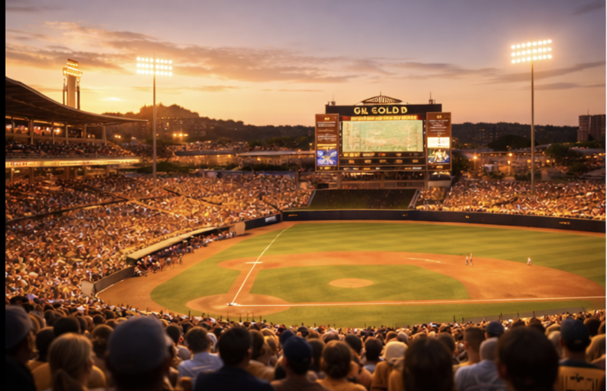
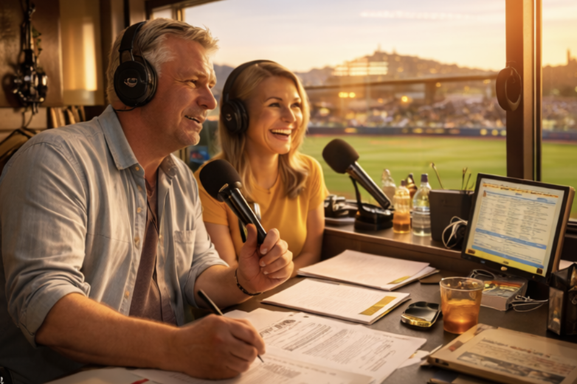
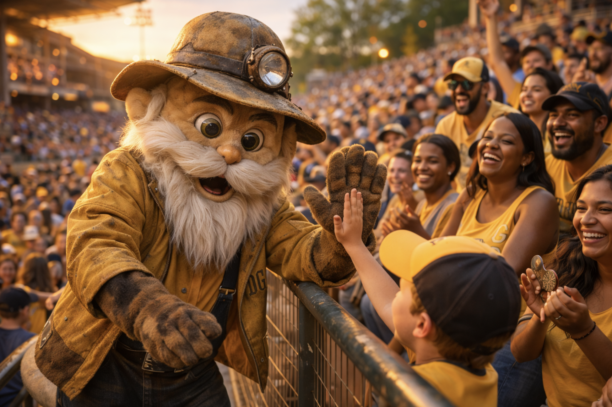
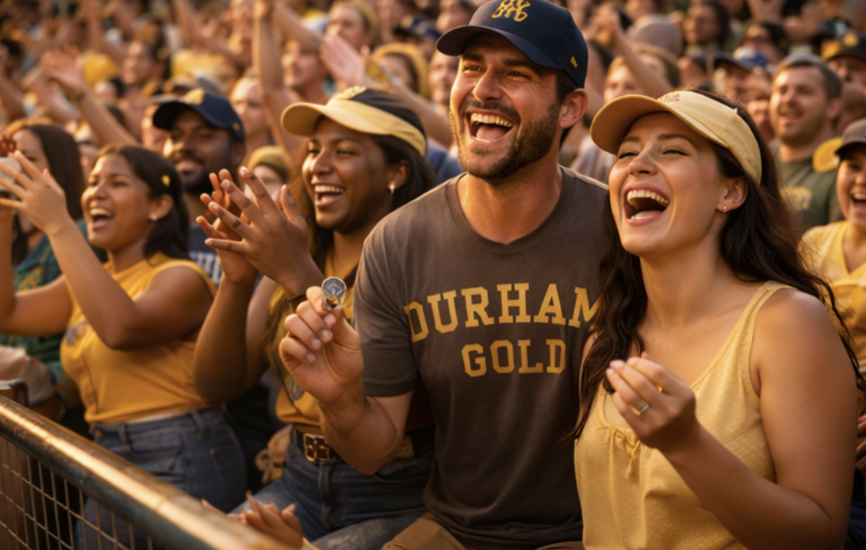

Durham Gold plays like the sun is always out, even when it isn’t. Their brand of baseball is quick, bright, and slightly unreal — rallies that feel inevitable, late-inning comebacks that look rehearsed, and a home crowd that turns every inning into a neighborhood festival. The Gold aren’t dystopia. They’re a warm hallucination: brick, light, music, and a little superstition.

The Gilt Yard. A brick-and-light ballpark that looks normal until sunset hits it. The concourses glow, the outfield goes honey-colored, and the entire place feels like it’s been dusted with pollen and luck. The right-field corner is known as The Bright Line — where the last sun sticks around longest.

Voice of the Gold. Reed calls the action like he’s narrating a summer memory. June interrupts with sharp, practical reads that keep the broadcast honest. Their booth is open-windowed when weather allows — you can hear the crowd breathe.

A well-worn “lucky charm” mascot — part prospector, part living good-omen. Not cute-cartoony. More like: an old costume everybody recognizes, with scuffed boots and a jacket that’s seen a thousand high-fives.

Durham fans dress like it’s still daytime even when it isn’t: warm colors, sun hats, gold accents. When a rally starts, you’ll see coins flipped, knuckles tapped, and a whole section doing the same quiet ritual at once.
| SS | Cal “Sunflash” Bennett |
| 1B | Hector “Hush Money” Lira |
| P | Wes “Gleam” Reddick |